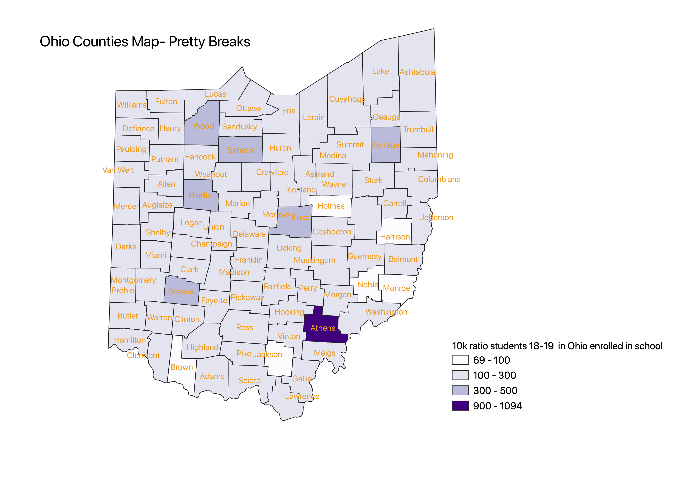
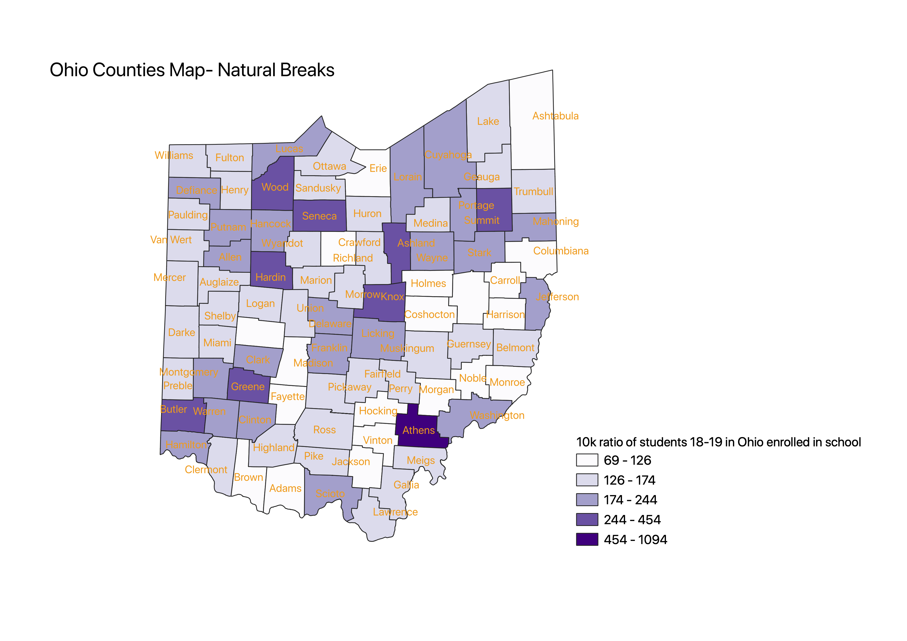
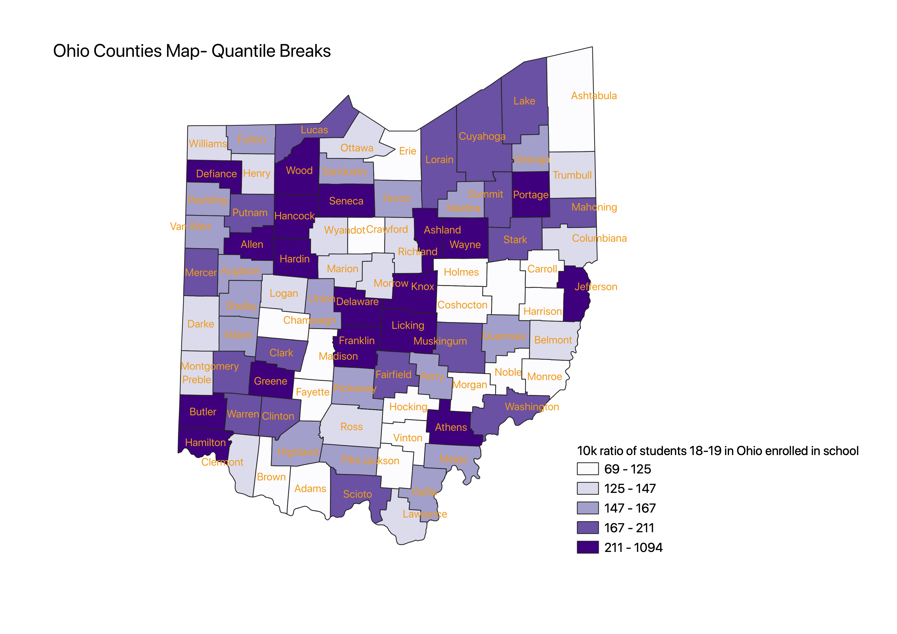

Homework 8
Victoria VanAuken
These three maps use the ratio of adults 18 to 19 in Ohio enrolled in school divided by the overall populations of the counties. I would have liked to use the population of adults 18 to 19. However, the county population data only had ages 15-19 as a category. The ratio is intended to try to show the percentage of young adults starting college per county (as 18-19 is often the age one starts college). However, the variability in the proportion of each county population that is in the desired age category will likely different.



Data used for this project
CSV dataset
CSV dataset
Link to shapefile